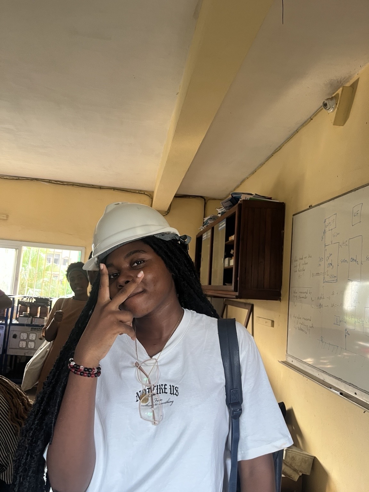
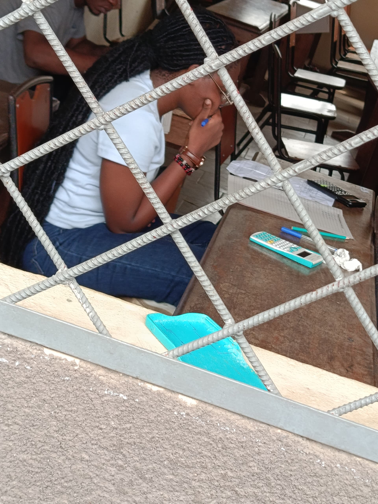
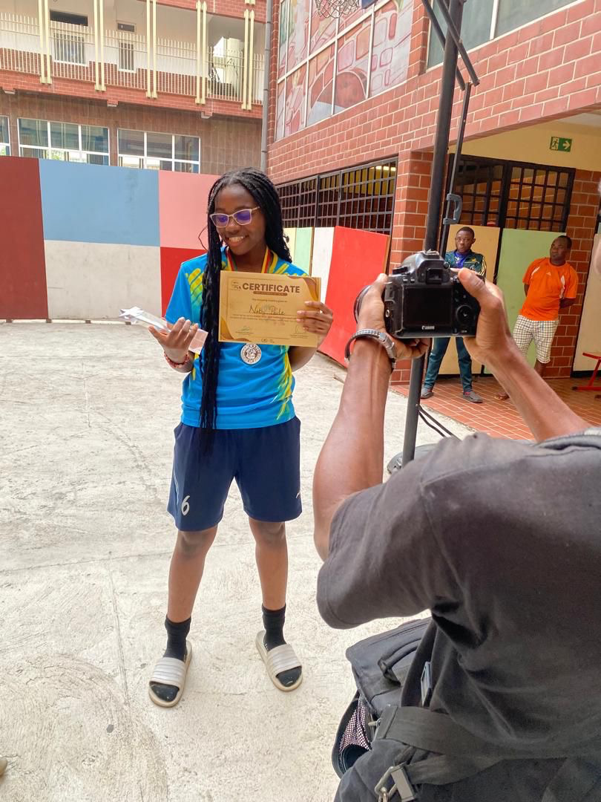
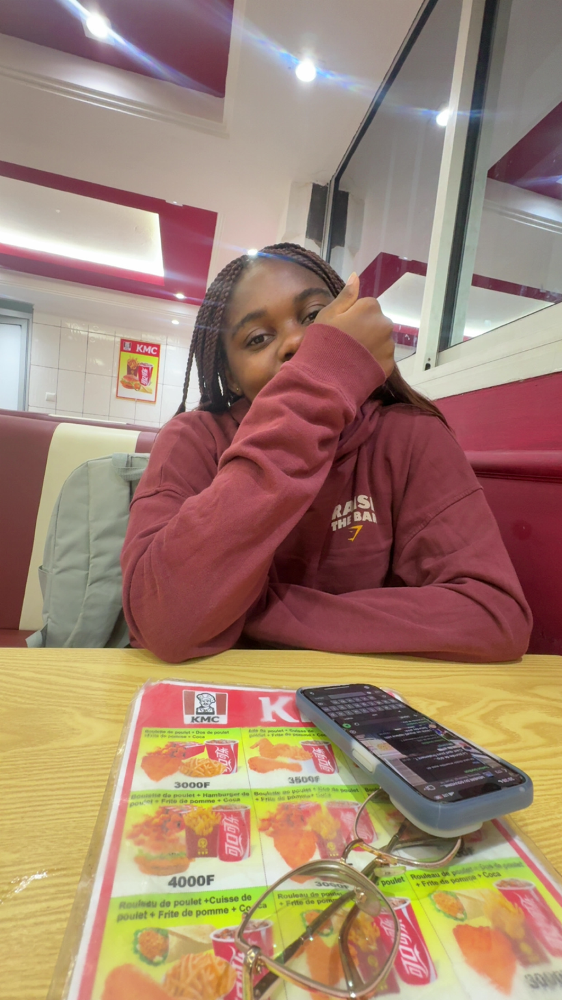
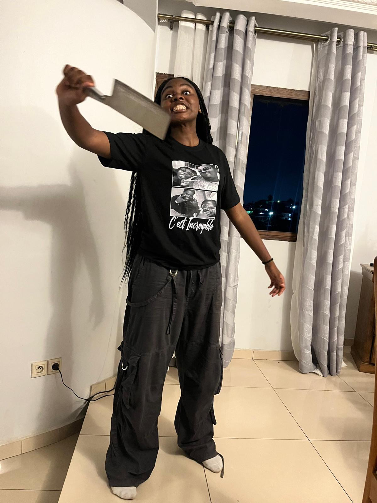
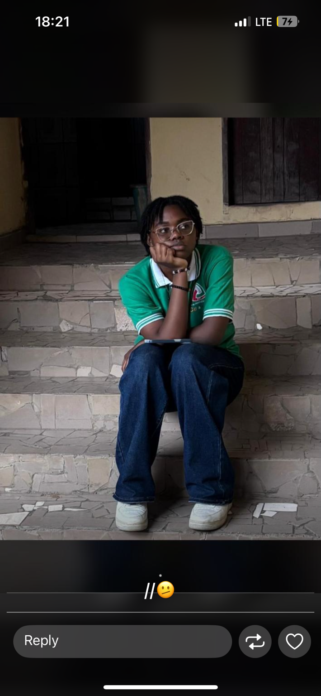

You crossed the horizon.
Welcome to the world that shaped me

The Dreamer
Ever since I was young, I've always loved imagining, creating and believing that impossible things could become real.
The Student
Ever since I was young, I've always loved imagining, creating and believing that impossible things could become real.


The Competitor
Ever since I was young, I've always loved imagining, creating and believing that impossible things could become real.


The Human
Beyond every achievement lies a person who laughs, cries, dreams, overthinks and keeps moving forward. These emotions are not weaknesses—they are what make me human.



Who is Nathy?
Nathy is someone who loves deeply, dreams fearlessly, and refuses to settle for an ordinary life. Endlessly curious—whether about technology, people, or faith—she asks questions, learns relentlessly, and keeps building until everything makes sense.
She values loyalty over popularity, chooses kindness as a way of life, and balances ambition with a wonderfully nonchalant charm. Beneath the laughter and the chaos is a heart that feels deeply, loves unconditionally, and quietly carries more than it lets the world see. She's still learning that she doesn't have to have everything figured out to keep moving forward.
Above all, she hopes to leave the world—and the people around her—a little better than she found them. Because, in the end, she is built by faith, love, resilience... and ✨memories✨.